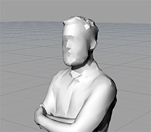
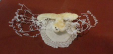
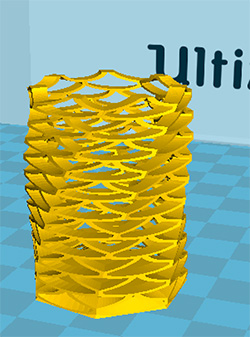
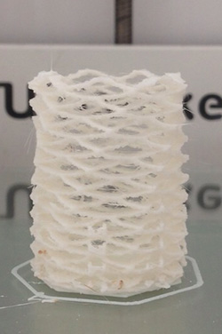
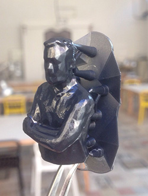

5 - 3D scanning and printing
Intro
The assignment of the fifth week was become familia with 3D scanning and printing.
3D scanning
At the Frosinone FabLab I used a Cubify Sense. It is an handheld device that, with a software can scan object and reconstruct a 3D model. The I decided to use a Microsoft Kinect sensor with Skanect (trial version). Skanect has a reduced accuracy in its trial version. I tried to scan some little objects but it cannot get many details and the result was not good. It showed better performances scanning people. So I scanned a friend of mine. The problem with the Kinect is to keep the subject inside the bounding box of Skanect and try to cover all the angles (especially the negative ones). However, even if I tried to be accurate the model had some holes so I used the function to fill the holes. However the low accuracy of Skanect made a model with very low details as you can see in the image below.

3D printing
The printing part was more tricky. As I couldn't go to the Frosinone Fablab I choose to use a printer that is in my university. The printer is a BFB 3000 touch. However the printer's bed is curved and I had many problems.

So I used an Ultimaker 2 and a Form 1+ (SLA) at FamoCose Makerspace. I used the Ultimaker to print a model generated with Autodesk Shapeshifter

but the model was too small and, even if I add some supports using Cura, it collapsed. The second attempt (increasing the thickness of the model) went better.

Then I decided to try the stereolithography to print the scan I made with the Kinect sensor. It was interesting as it was my first experience with that kind of printer. The preForm software orient the model with a certain inclination. However I changed the default inclination to avoid the supports be attached to the front of my model.

 Attribution, non-commercial, share alike.
Attribution, non-commercial, share alike.